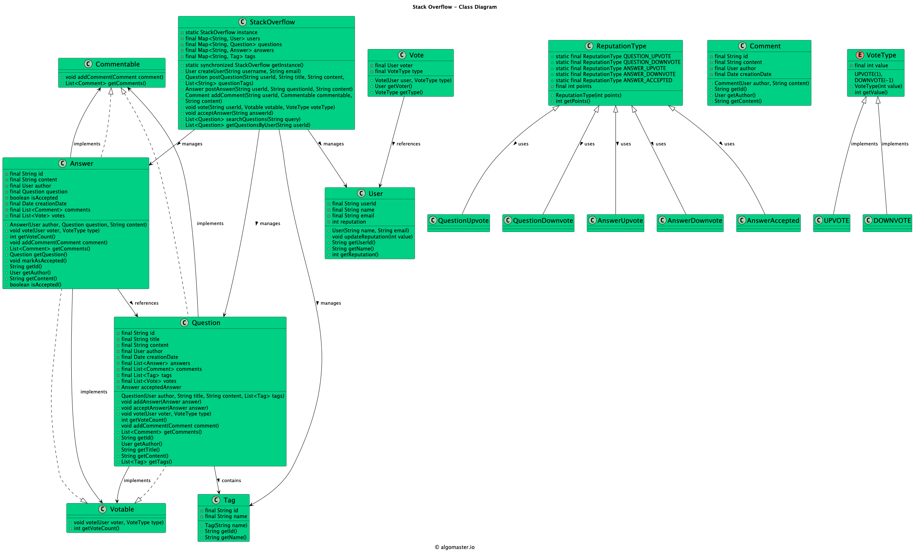

Back to Index
Module: 18 - Interview Problems Part 6Published: 2026-06-13
Designing Stack Overflow
lldinterviewstack-overflow
📌 Designing Stack Overflow
[!info] Navigation Module: [[18 - Interview Problems Part 6/index|18 - Interview Problems Part 6]] Prev: [[18 - Interview Problems Part 6/social-networking-service|← a Social Networking Service]] Next: [[18 - Interview Problems Part 6/library-management-system|a Library Management System →]]
Requirements
- Users can post questions, answer questions, and comment on questions and answers.
- Users can vote on questions and answers.
- Questions should have tags associated with them.
- Users can search for questions based on keywords, tags, or user profiles.
- The system should assign reputation score to users based on their activity and the quality of their contributions.
- The system should handle concurrent access and ensure data consistency.
UML Class Diagram

Classes, Interfaces and Enumerations
- The User class represents a user of the Stack Overflow system, with properties such as id, username, email, and reputation.
- The Question class represents a question posted by a user, with properties such as id, title, content, author, answers, comments, tags, votes and creation date.
- The Answer class represents an answer to a question, with properties such as id, content, author, associated question, comments, votes and creation date.
- The Comment class represents a comment on a question or an answer, with properties such as id, content, author, and creation date.
- The Tag class represents a tag associated with a question, with properties such as id and name.
- The Vote class represents vote associated with a question/answer.
- The StackOverflow class is the main class that manages the Stack Overflow system. It provides methods for creating user, posting questions, answers, and comments, voting on questions and answers, searching for questions, and retrieving questions by tags and users.
- The StackOverflowDemo class demonstrates the usage of the Stack Overflow system by creating users, posting questions and answers, voting, searching for questions, and retrieving questions by tags and users.